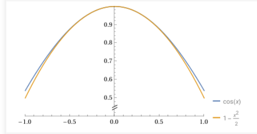

Para una función \(f\) y un natural \(k \geq 1\), \(f^{(k)}(a)\)
denota la \(k\)-ésima derivada de la función en \(a\) (si es que existe).
Por convención tenenmos \(f^{(0)}(a)=f(a)\).
Ejemplo
Sabemos que la aproximación lineal
de \(\cos(x)\) en \(x=0\) es simplemente la recta a altura 1, la cual no
aproxima muy bien. Este ejemplo muestra que se puede mejorar la aproximación
si tomamos un polinomio de grado 2 en vez de una recta (que es un
polinomio de grado 1).
Para \(f(x)=\cos(x)\) y el polinomio de grado 2, \(p(x)=A+Bx+Cx^2\),
encutra \(A,B\) y \(C\) tales que
\begin{eqnarray*}
f^{(0)}(0)=p^{(0)}(0), \quad f^{(1)}(0)=p^{(1)}(0), \quad f^{(2)}(0)=p^{(2)}(0).
\end{eqnarray*}
Las gráficas de coseno y el polinomio de grado 2 del ejercicio se muestran abajo.

Lema
Supon que \(f\) es una función definida en una vecindad de \(a\)
y tal que admite \(n\)-derivadas en \(a\). El polinomio
\[
\sum_{k=0}^n \frac{f^{(k)}(a)}{k!}(x-a)^k
\]
satisface
\begin{eqnarray*}
f^{(k)}(a)=p^{(k)}(a), \quad k=0,1,\dots, n
\end{eqnarray*}
Definición
El polinomio del Ejercicio anterior se conoce
como el \(n\)-ésimo polinomio de Taylor de f alrededor de \(a\) y se denota
\[
T_{n,a}f(x)= \sum_{k=0}^n \frac{f^{(k)}(a)}{k!}(x-a)^k
\]
Nota: si es claro alrededor de cual punto se está tomando el
polinomio de Taylor se omite la \(a\) y se denota
\[
T_nf(x)= \sum_{k=0}^n \frac{f^{(k)}(a)}{k!}(x-a)^k
\]
Ejemplo
Demuestra que el polinomio \(n\)ésimo de Taylot de la exponencial,
alrededor de \(0\) es
\[
\sum_{k=0}^n\frac{1}{k!}x^k
\]
mientras que alrededor del \(1\) es
\[
\sum_{k=0}^n \frac{e}{k!}(x-1)^k
\]
Proposición
Se supone que tanto \(f\) como \(g\) son funciones definidas en
una vecindad de \(a\), ambas admiten \(n\) derivadas en \(a\) y se toman
los polinomios de Taylor alrededor de \(a\).
Los polynomios de Taylor satisfacen las siguientes propiedades.
\(T_n(\alpha f + g)= \alpha T_nf + T_n g\).
\((T_n f)'= T_{n-1}f'\).
Si \(g(x)=f(cx)\), para una constante \(c\), entonces \(T_ng(x;a)=T_nf(cx;ca)\).
Proposición
Esta proposición provee una manera indirecta de encontrar polinomios de Taylor.
Sea \(f\) una función definida en \(I\), una vecindad de \(0\)
y tal que admite \(n\) derivadas en \(I\).
Supon que \(p\) es un polinomio de grado menor o igual a \(n\),
\(g\) una función definida en \(I\) que admite \(n\) derivadas en \(I\)
y tal que:
\[
f(x)=p(x)+x^n g(x) \quad \textrm{y} \quad \lim_{x\to 0}g(x)=0 .
\]
Demuestra que \(T_nf=p\).
Sugerencia: Inicia con \(n=2\). Define \(h(x):=f(x)-p(x)\) y prueba que
\(h^{(k)}(0)=0\), \(k=0,1,2\). Luego generaliza para cualquier \(n\).
Teorema
Teorema de Taylor
Sea \(f\) una función definida en \(I\), una vecindad de \(a\)
y tal que admite \(n+1\) derivadas en \(I\). Entonces para todo \(x\) en \(I\)
\[
f(x)=T_nf(x;a) + E_n(x-a)
\]
donde
\begin{eqnarray*}
\lim_{x\to a}\frac{E_n(x-a)}{(x-a)^n}=0.
\end{eqnarray*}
Además, existe \(c\) entre \(x\) y \(a\) tal que
\(E_n(x-a)=\frac{f^{(n+1)}(c)}{(n+1)!}(x-a)^{n+1}\).
Sugerencia: Inicia con \(n=2\).
Para la primera parte define \(h(x):=f(x)-T_nf(x;a)\) y
\(g(x)=(x-a)^{n}\); nota que \(h^{(k)}(a)=g^{(k)}(a)=0\), \(k=1,2\);
usa el Teorema del T.V.M. de Cauchy para probar
\[
\frac{h(x)}{g(x)}=\frac{h^{(1)}(c_1)}{g^{(1)}(c_1)}
=\frac{h^{(2)}(c)}{g^{(2)}(c_2)}
\]
después demuestra \(\lim_{x\to a}\frac{E_2(x-a)}{(x-a)^2}
=\lim_{x\to a}\frac{h^{(2)}(c_2)}{g(c_2)}=0\).
Para la segunda parte define \(h(x):=f(x)-T_nf(x;a)\)
y \(g(x)=(x-a)^{n+1}\) y vuleve a usar el T.M.V para probar
\[
\frac{h(x)}{g(x)}=\frac{h^{(n+1)}(c)}{(n+1)!}
\]
Lema
Sea \(f\) una función definida en \(I\), un intervalo alrededor de
\(a\) tal que existen \(n+1\) derivadas en \(I\). Si la derivada
\(n+1\) de \(f\) satisface \(|f^{(n+1)}(x)| \leq M\) para todo \(x\)
en \(I\) entonce el error en el Teorema de Taylor satisface
\[
|E_n(x-a)| \leq M \frac{(x-a)^{n+1}}{(n+1)!}
\]
Ejemplo
Demuestra la siguiente cota para los errores de
los polinomios de Taylor, alrededor del \(0\), de las función exponencial:
el Ejercicio 18.19
nos da las series de Taylor de seno, conseno y exponencial,
es decir, para \(x\in \mathbb{R}\):
\begin{eqnarray*}
e^x&=& \sum_{k=0}^\infty\frac{1}{k!}x^k , \\
\sen(x)&=& \sum_{k=0}^\infty \frac{(-1)^k}{(2k+1)!}x^{2k+1},\\
\cos(x)&=& \sum_{k=0}^\infty \frac{(-1)^k}{(2k)!}x^{2k}.
\end{eqnarray*}
Ejercicio
En este ejercicio se encuentra una aproximación, mediante
un polinomio de grdo 2, a la función \(f(x)=\sqrt{3+x}\),
pero cerca del punto \(x=1\). Encuentra \(p\), un polinomio
de grado \(2\), tal que
\begin{eqnarray*}
f^{(0)}(1)=p^{(0)}(1), \quad f^{(1)}(1)=p^{(1)}(1), \quad f^{(2)}(1)=p^{(2)}(1).
\end{eqnarray*}
Nota que las funciones y derivadas ahora están evaluadas en \(x=1\).
Nota: es mejor proponer \(p\) de la forma \(p(x)=A+B(x-1)+C(x-1)^2\)
y encontrar \(A,B\) y \(C\).
Ejercicio
Da un ejemplo de una función \(f\), tal que \(T_nf \) es un
polinomio de grado menor estricto que \(n\). ¿ Qué condición
hay que pedir para que \(T_nf\) tenga grado \(n\) ?
Ejercicio
Demuestra las siguientes fórmulas para los polinomios de Taylor
alrededor del \(0\) de las funciones seno y coseno \((n=0,1,\dots\)).
Es interesante notar que seno es una función impar y que cualquier
polonomio de Taylor de seno es un polinomio impar. Similarmente,
coseno es una función par y cualquier polinomio de Taylor de
coseno es par también. Este ejercicio muestra que esto no es coincidencia.
Sea \(f\) una función definida en una vecindad de \(0\) y tal que
admite \(n\) derivadas en \(0\).
Demuestra que si \(f\) es una función impar entonces todas las
potencias de \(T_nf\) son impares (por lo tanto \(T_nf\) es una
función impar).
Demuestra que si \(f\) es una función par entonces todas las
potencias de \(T_nf\) son pares (por lo tanto \(T_nf\) es una función par).
Ejercicio
Sea \(f\) una función definida en una vecinda de \(a\) tal
que admite \(n\) derivadas en \(a\). Define \(g(x)=f(x+a)\),
para \(x\) en una vecindad de \(0\). Demuestra que \(T_n f(x;a)=T_ng(x-a;0)\).
Ejercicio
Calculas los polinomios de Taylor, alrededor del \(0\) de las funciones:
\(f(x)=e^{2x+1}\).
\(f(x)=\sen(3x)\).
\(f(x)=\sen(x) + \cos(x)\).
\(f(x)=\sen(x) \cos(x)\).
\(f(x)=\cosh(x)\).
\(f(x)=\operatorname{senh}(x)\).
Ejercicio
Demuestra la identidad
\[
\frac{1}{1-x}= 1+x+\cdots + x^n - \frac{x^{n+1}}{1-x}
\]
válida para \(|x|< 1\).
Usa el inciso (1) y el Proposición 14.8
para demostrar
\[
T_n \left( \frac{1}{1-x} \right)= 1+x+\cdots + x^n
\]
Usa el inciso (a) y el Proposición 14.8
para demostrar
\[
T_{2n}\left( \frac{1}{1+x^2} \right)=\sum_{k=0}^n \frac{(-1)^k}{2k+1}x^{2k+1}
\]
Ejercicio
Demuestra las siguiente cotas para los errores de
los polinomios de Taylor, alrededor del \(0\), de las funciones seno y coseno: